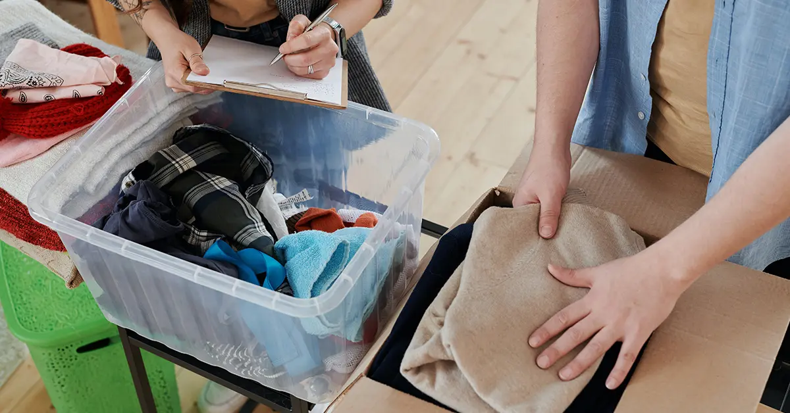

label Declutter- Core Overview: Decluttering your home - Unlock the secrets to maintaining an organized space year-round with our ultimate guide to seasonal decluttering.
- Actionable Insight: Practical advice on benefits of decluttering your home seasonally.
- Actionable Insight: Practical advice on 1. less clutter means less stress..
- Actionable Insight: Practical advice on 2. more space to live in..
- Storage Space Optimization: Using dedicated, 24/7 monitored personal or business storage units across Delhi, Gurugram & Noida allows you to protect valuable assets while keeping primary spaces organized.
- Benefits of Decluttering Your Home Seasonally
- 1. Less clutter means less stress.
- 2. More space to live in.
- 3. Improved functionality.
- 4. Increased productivity.
- 5. A more guest-friendly home.
- 6. Complete use of seasonal items.
- 7. Easier maintenance.
- Decluttering for Autumn and Winter
- # 1 Warm clothes and jackets
- # 2 Winter Linen
- # 3 Hats, Gloves, Socks, and Scarves
Decluttering your home can be a game-changer, and tackling it seasonally can make the process even more effective. The Ultimate Guide to Seasonal Decluttering Your Home is designed to help you transform your living space throughout the year. Each season brings unique challenges and opportunities for organizing, and understanding these can simplify the process.
Spring is perfect for fresh starts. Use this time to clear out winter clutter and make room for new beginnings. Summer offers a great opportunity to reassess and streamline your belongings. Focus on items you no longer need and consider using self-storage for seasonal items.
As fall arrives, it’s time to prepare for the colder months. Organize your home to make it cozy and efficient. Store summer gear in a self-storage unit to keep it out of the way. Winter calls for deep cleaning and reorganizing to make the most of indoor time.
By following this guide, you’ll not only keep your home clutter-free but also create a space that adapts to your needs throughout the year. Embrace seasonal decluttering to maintain a well-organized, functional home every day.
Benefits of Decluttering Your Home Seasonally
Before you plunge into the process it always helps to understand why you are doing it and what the goal is. When you know what the benefits are, you are more likely to see the project through to its very end.
1. Less clutter means less stress.
In a survey conducted by budgetdumpster.com, 48.5% of respondents agreed that having unwanted clutter in the house made them feel stressed. Finding a way to keep your home free of clutter, will reduce stress levels.
2. More space to live in.
When you have too many things in your house, you have lesser space to move around. This can cause you to feel cramped or even claustrophobic. When you declutter, you free up space around the house, and it gives you an undeniable sense of relief and freedom.
3. Improved functionality.
Decluttering does not mean just dumping things in the garbage. It means keeping things that you need. It also means keeping only things that are in good working condition whether they are boots or utensils or gadgets. Once your home is decluttered, everything that remains works fine, making your home 100% functionally efficient.
4. Increased productivity.
When you do not have to waste precious minutes searching for the things you need, you will realise that your productivity around your home increases. The stress from not knowing where things are is also eliminated in a home that is clutter free and where every object has a specific place.
5. A more guest-friendly home.
You will not be scrambling to clear the house to make room for visitors if you make decluttering a habit. Your guests will also feel more welcome and comfortable in a space that is clean and tidy.
6. Complete use of seasonal items.
Have you ever discovered a beautiful sweater in the middle of summer tucked at the back of your wardrobe, only to lose it in the clutter and forget about it when winter comes? When you declutter according to the season, you will be surrounded by all things related to the current season. This way you will maximise the benefits of the items you bought specifically to use at a particular time of the year.
7. Easier maintenance.
Having fewer things around the house and assigning a fixed, practical place for every item makes it easier to clean your home. Everything is organised and tidy, and it does not take too much effort to keep it that way.
Decluttering for Autumn and Winter
In a country such as ours, autumn is that short-lived couple of weeks when the temperature keeps dropping until it hits the winter low. Once you notice that the weather is slowly getting colder, it is your signal to get ready for winter. Make an exhaustive list of things around your home room-wise. Carefully go through the list and highlight all the things that you need for the winter. From the rest of the items, pick the ones you will use when the weather changes and put them away in storage. Items that are broken or that you do not use anymore can be discarded or donated. Items that you have no use for but cannot get rid of because of some sentimental attachment, can also be put in storage.
Here is a list of all the winter must-haves you must bring out and prepare, to take you through the chilly months of December through February:
# 1 Warm clothes and jackets
If you had them shoved into a corner all summer, they need to be aired out or dry-cleaned in preparation for winter. Therefore, you must begin winter decluttering before the season begins. Get your fur-lined jackets and woollen clothes out of the wardrobe. Check for damage from poor storage. The clothes that are in good condition and still fit you, stay. The damaged ones need to be discarded. Go through the rest of your wardrobe. Pick out clothes suitable for chilly weather and artfully arrange them in your wardrobe. From what remains, discard the ones that you never use. The rest will be clothes that are best worn in spring and summer. These clothes can be packed and put into a self-storage unit. By putting them in a self-storage unit, you will be clearing up space for your winter wear.
# 2 Winter Linen
Bring out the fleece bed sheets and warm blankets, and put away the lightweight dohars. As winter progresses, it is only going to get colder. Empty your linen closet. All the summer sheets and blankets need to go into storage and make room for the thick winter bedsheets and blankets. Depending on how cold your city gets you can even buy thick curtains in dark shades to keep the chilly air at bay. Before using the blankets, get them professionally cleaned. In case you had not stored them properly, there is a chance they have gotten mouldy. While the winter linen gets disinfected and cleaned, pack away your summer linen and stack them in your storage unit.
# 3 Hats, Gloves, Socks, and Scarves
There is nothing quite as frustrating as having scores of odd socks and de-coupled gloves. An important part of preparing for winter is finding lost socks and gloves. Create a separate compartment in your wardrobe for socks and gloves. Always store the pair together – one inside the other, to be sure they are not separated. Get your woollen beanies and warm hats out and organise them on a shelf in such a way that they are easily accessible. As for your scarves, you can fold them and put them in your wardrobe or hang them on special hangers which are designed to hold multiple scarves and stoles.
# 4 Footwear
You will need your boots to keep your feet protected. If you have several pairs of footwear, you need to arrange them such that your winter gear is easily accessible. Choose the right kind of footwear for different activities. Comfort trumps style when the air is piercingly cold. You will be partying too given that Dusshera and Diwali come along in autumn and Christmas and New Year are bang in the middle of the cold season. Be wary if you plan to wear delicate footwear. Get yourself drying racks or drip trays for your wet shoes. When the winter ends these items can be put into storage but through wet winters, they help keep your house free of boot marks.
# 5 Rugs and Throws
While shimmering tiles look beautiful, on a cold winter’s day you will be grateful to see a warm rug on the floor instead. Warm rugs and carpets placed at strategic locations at home not only give your house a luxurious ambience but also keep you warm. Spread a soft, throw blanket on your sofas and chairs for extra warmth and comfort. Rugs get dirty easily. You will need to run a vacuum cleaner on them periodically. If you have two sets of rugs, you can alternate between them – use one set, while the other gets cleaned.
# 6 Festive Decor
Get your Diwali, Christmas, and New Year decorations out. If you are taking them out of storage you will need to check if they are in good condition. Throw away the broken ones. Check if the serial lights are working before putting them up. Keep storage containers ready for when you need to take down all the decorations. Do not dump all the decorations together. Get boxes with small compartments for the small ornaments. Store streamers and fairy lights such that they do not get tangled. Breakable items need to be packed and stored with care. When you pack them away, keep in mind that you will need them again next year.
# 7 Room Heater and humidifiers
In cities like Delhi, when winter peaks, the temperature can go as low as 5 degrees Celsius. However, few homes come with central heating because of the temperature extremes throughout the year. Getting a radiator to heat up the room is a clever idea. Put your air coolers into storage and make way for the room heater/radiator. Do not forget your humidifier to add comfort during the dry Delhi winter.
# 8 Board Games and sports equipment
Unless you live near a snowclad mountain, most of the winter you are going to play indoors. If you go on ski vacations, you will need your skiing gear. Keep them clean and handy. Check for cracks or loose screws, before you put them to use to avoid accidents. For those who do not ski, there are always board games and video games to play during the long festive holidays. The battered games and the glitchy CDs need to go in the trash. Keep only the ones that you can play with. Store them neatly in a storage cabinet in such a way that your favourites are immediately accessible.
Decluttering for Spring and Summer
When the days become warmer and you see more blue skies, you know spring is nearby with summer at its heels. Before the heat wave strikes you need to get your home ready. It is time to embrace the new beginning with some ‘spring-cleaning’. Do not attempt to clean your entire house in one day. Spread the work over a week, making steady progress from one day to the next. Attempting to declutter the whole house in a single day will leave you feeling overwhelmed and stressed. You will not do a thorough job, which will only stress you further.
Remember these evergreen decluttering tips:
– Declutter one room at a time.
– Make an inventory list of everything at home.
– Pick out all the winter-specific gear and equipment on the list.
– Check every item for signs of damage.
– Throw away the stuff that is beyond repair.
– Clean and dry the rest of your winter stuff.
Need Flexible Storage Space in Delhi NCR?
Rent clean, private, lockable storage rooms with 24/7 CCTV surveillance, automated access control, and flexible monthly plans across Gurugram, Delhi & Noida.
– Pack the winter items appropriately and put them in storage.
– Amongst the non-winter items in your inventory list, keep only the items you need.
– Donate, sell or throw away items you do not use and have no sentimental value to you.
– Items that you want to keep but are of no use currently can go into your storage unit,
– If you had summer items, put in storage, it is now time to bring them out.
Storing your winter items
Most of your winter gear is bulky and takes up too much space. Given that most apartments come with little storage space, getting your winter stuff out the way is the first step towards a lovely summer of fun and frolic.
#1 Put away your winter wear.
By winter wear we mean clothes and accessories that kept you warm and fashionable through the cold months. Jackets, coats, sweaters, socks, gloves, beanies, mufflers, earmuffs, and everything that you use when the temperature drops need to be taken out of your wardrobe. Wash and dry all of them. Get storage boxes and neatly pack your winter clothes in them. Make sure boxes are sealed airtight to prevent the clothes from getting damp and mouldy while in storage. Once your boxes are sealed, move them into a self-storage unit. Your items are safe, and your wardrobe now has room for all your summer wear now.
# 2 Stow away blankets and sheets.
Those thick blankets that kept you warm through the winter are of no use in the summer. Clean them, dry them, and then pack them into boxes to put them in storage. Keep only the sheets that are lightweight and airy. Satins and silks tend to make you sweat. Pure cotton linen in pastel shades is the best choice for the summer.
# 3 Take down the decorations
Do not be the person who keeps their Diwali lamps and Christmas lights out in the rain and sun all through winter. As soon as the holiday season is over, take down the festive decor. If you used oil lamps, then they need to be thoroughly washed and dried before they are packed. The matka lamps break easily, so pack them with caution. If you have a real tree for Christmas, dispose of it responsibly. There is no sense in keeping a withered Christmas tree in the house. If you have an artificial tree, dismantle it according to the instructions it came with. Put it back in its original packaging. Get a container with several small compartments to store small decor and ornaments. Do not store anything that is damaged. Take extra precautions while packing glass items. Disentangle wires and streamers and store them neatly, to ensure a hassle-free experience unboxing them when winter comes along again.
# 4 Survey your home for further decluttering.
Once all the winter items have been put away, survey your home for more things to put away or get rid of. Most often we clutter our homes without even knowing we are doing it. Piles of paperwork and trinkets crowd drawers and countertops. Go through every single piece of paper carefully before throwing anything away. Put all important documents in neatly labelled filing cabinets. All books must sit on the bookshelf. If you have no place on the shelf, then you need to make a stack of books to put away in storage. As for the trinkets, keep only the ones that are of value to you. Get rid of the rest. You can even choose to put some furniture in your storage unit if you have too much and are feeling cramped.
Summer Items to have at home
– Swimming Gear
Poolside fun and trips to the beach are on everyone’s to-do list when summer comes. After staying indoors for days on end in the chilly weather, the sun is a welcoming sight. Combine that with a dip in the pool or ocean, and you have the perfect summer day. Of course, this means you need to get all your water gear ready. For a relaxing day at the beach, you will need bathing suits, flip-flops, inflatable toys, towels, umbrellas, and hats. Take them out of storage and air them out before using them.
– Camping Gear
Clear weather is the best time to embark on a trekking expedition. The great outdoors beckons those hungry for adventure. Get your camping gear out and set off on a mountain trail. Carry only the essentials in your haversack. If you had these items packed and put away in storage, it is best to take them out a few days before your trip, to ensure they are in working condition. We strongly recommend that at the time of putting things into storage, you ensure that they are clean, dry and in working condition. This way when you take them out later to use, you can be sure they will work.
– Light, Comfortable clothes
Hotter temperatures call for light, airy fabrics. Put away the thick warm winter clothes and make room in your wardrobe for your summer clothes. Air them out in the sun before using them. Sunlight is a natural disinfectant. You need clothes and accessories that will keep your body cool. Take your summer clothes out of storage. Keep the ones that fit and give away the ones that do not. Whenever you are tempted to buy more clothes, you need to think about clutter. To prevent you from making impulse buys, make a pact with yourself to give away one piece of clothing every time you get a new outfit. This will help you make smart choices.
– Refrigerator and air coolers
Cool drinks and ice cream on a balmy day can bring such joy and relief. This means you need to keep your refrigerator in good condition. You need to practice decluttering your refrigerator as well. Do not store food for more than a day. Give away excess food items instead of cramping your refrigerator with leftovers. Stock up on fruits and juices to keep you hydrated. Investing in an air conditioner or air cooler is also a viable choice to help you beat the heat. Air coolers are more affordably priced than air conditioners. If you get a portable one, you can even move it from one room to the next if needed.
– Gardening Equipment
If you have a green thumb then by the time winter is over, you will be itching to start working on your garden once more. Spring and summer are the best times of the year to indulge in gardening. If you live in an apartment, you may not have space for a lawn and landscaping, but you could still set up a small green zone on your balcony with herbs and other potted plants. Get out your gardening equipment and start working the soil.
There are many ways in which you can go about decluttering your home and you must choose one that does not stress you out. If you want to make decluttering a regular affair through all seasons, it should be an activity that gives you happiness and not one that sours the mood. When the task of decluttering seems insurmountable and tedious, find solace in the fact that once you are done your home and your mind will be several times lighter and brighter.
Final Words for Decluttering Your Home
In conclusion, seasonal decluttering is a practical approach to maintaining a clean and organized home throughout the year. By embracing the unique opportunities each season offers, you can efficiently manage your belongings and make your space more functional. Using self-storage for items not in immediate use helps keep your home clutter-free and simplifies transitions between seasons.
By following the tips in The Ultimate Guide to Seasonal Decluttering Your Home, you’ll enjoy a more organized and inviting living environment year-round. Embrace this method to enhance your home’s efficiency and ensure it remains a comfortable and well-organized haven.
Frequently Asked Questions
Seasonal decluttering involves organizing and removing items from your home based on the time of year. It helps keep your space fresh and aligned with changing needs.
It helps manage clutter, adapt to seasonal changes, and maintain an organized home. Regular decluttering can also reduce stress and improve overall well-being.
It’s ideal to declutter at the start of each season—spring, summer, fall, and winter. This keeps your home organized and ready for seasonal transitions.
Start with one room at a time, sort items into keep, donate, or discard piles, and focus on seasonal items like clothing and decorations.
Donate usable items to charities, sell them online, or recycle them. Ensure to dispose of hazardous materials properly.
Focus on cleaning out winter clothing, expired pantry items, and tackling storage areas like basements and attics.
Sort through decorations after the holiday season, keep only those you use, and store them properly to avoid cluttering your space.
Storage bins, organizational labels, and space-saving hangers are useful tools. They help keep items neatly stored and easily accessible.
Decide whether they are essential or just taking up space. Consider keeping a few special items and finding creative ways to store or display them.
Set small, achievable goals, track your progress, and reward yourself for completing tasks. Enlisting family or friends for support can also keep you motivated.